|
| Soluce
Goldeneye : Bunker I |
|
| Soluce
Goldeneye : Bunker I |
Le Premier Bunker, plus petit et beaucoup plus facile que le 2eme. Normal quoi. Ce Niveau est en fait assez court, et y a pas mal de Trucs différents à faire. Commençons ! Vous commencez là ou vous aviez sauté dans Surface 1. Prenez tout droit et tuez les 2 gardes. Si vous voulez, petez l'Alarme. C'est là que le 1er Objectif commence. |
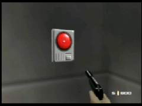
| Les
Cameras : Secret Agent / 00 Agent |
Il y en a 4. Elles explosent en un seul coup si vous visez pile dans l'oeil de la Camera. Pratique ! La Dernière est la plus chiante, enfin, la moins facile disons, car elle et au loin et faut la détruire à distance au KF7 Soviet. Les 2 Premières Cameras, on peut les shooter dans l'ordre que l'on veut, y a pas de mal. C'est vous qui voyez. Continuez tranquille votre chemin en éliminant un à un les Gardes. N'oubliez pas les Cartes de ceux qui ont un Beret Noir. |
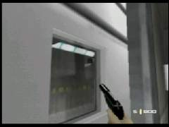 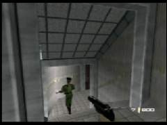 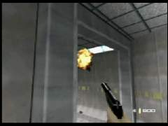 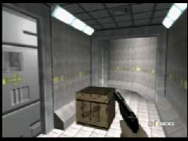

Note - Y a un Gilet en Agent et Secret Agent au fond du Couloir de la Camera 3. Une fois la Camera détruite, tuez les Gardes au fond si vous voulez. Ensuite, si vous avez bien chopé une ou 2 Cartes, vous pouvez entrer dans le Sas et le netoyer pour que Boris y fasse son truc plus tard. |
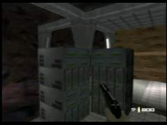
| Copier
la Clé du Goldeneye, et la laisser là |
|
Photographier l'Ecran :
Tous
Niveaux |
| Trouver
quelqu'un pour activer l'Ordinateur
: Tous
Niveaux |
Quand tout est nettoyé dans les Couloirs du Bunker, on peut passer à la Grande Salle. De loin, visez la 4eme et dernière Camera. Boum ! (Obectif des Cameras rempli) Ensuite, faites-vous tous les Gardes et chopez la Clé du Goldeneye près de Boris. Copiez-là avec le "Key Analyser" et jetez-là. Prenez une Photo de l'Ecran et voilà. Boris s'est sauvé.... Retrouvez-le et suivez-le ! |
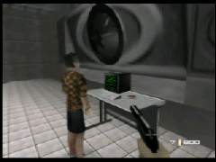 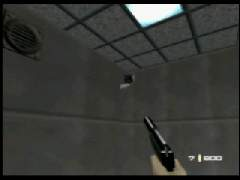 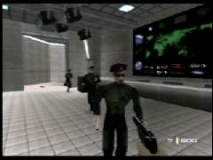 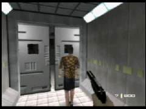

| Télécharger
l'Ordinateur
: 00
Agent |
Boris
va commencer à tripatouiller l'ordinateur. Laissez-le faire, puis
lorsque l'Alarme retentit, sortez votre "Datathief" et utilisez-le
sur l'Ordinateur. Filez et l'objectif se fera touts seul pendant que des
Janus Special Forces vont débouler par la Sortie.
Gaffe aux 2 Gardes Verts en haut de l'escalier près de la Sortie
!! Bunker I fini ! |
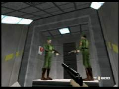